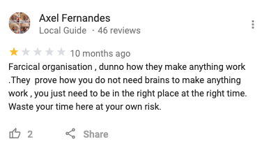
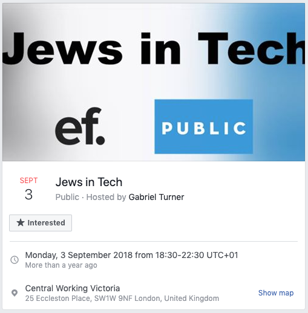

### Wendy White Tan, Entrepreneur First —
Finally, Ms Tan is a *Technology InvestEr Partner* at Tech Nation, according to the [companies' house](ch-tn-wm). Jesus, Tech Nation is so degraded they cannot even spell an English word "investor" properly against the name of their top director. I'm going to spare Ms Tan honours and not accuse of being a liar like Burbidge, because she seems to be an honest business lady out their scam-pi league completely, hence working as Vice President at Alphabet X. She just appeals to me and [says all](tan) the right things about startups:
- It's gotta to be business you really care about in an area you're really passionate about.
- You've got to remember, this is a marathon not a sprint.
- Each day is different and it's not always easy and you've got to be resilient and adaptive.
- And the days when you find it difficult you got to remember why you're doing it to get you through that.
- It's about making a difference, really getting great results and working with great people.
- You have to be *true to yourself* with what you do you can't do things to please other people or to look good.
"When the crash came, we really hit a wall and I hit a personal wall about having to do with failure, but when I processed that failure, I got real clarity..." I think those corruptioneers listed above listened to this video, and they also got real clarity: You have to get into _GovTech_ so that when the crash comes, you won't hit a wall! As easy as that! The government will always have money. Who cares about selling stuff to customers? Just sell it to the government via the key local and national PLAYERS! Easy-peasy UK squeezy.
I don't know what to say about her apart from the fact that her working for Google just gives me reason to believe Google is really keen on seeing the UK as deregulated zone with "liberal" economy, with tax relieves for corporations _etc_. I won't be surprised if in 2-3 years they start selling AI-surveillance systems to the Police and stuff like that you know.
What I have to say, is that the fact she's registered at Entrepreneur First while being Tech Nation's director is not an accident. Tech Nation and _Entrepreneur First_ are just made for each other. Behind the scenes, EF are getting every single visa they need from Tech Nation without questions asked (this is my _opinion_ which I wanted to prove but the Home Office rejected my Freedom Of Information request because they are scared to reveal the truth, but it's based on a telephone interview I had - see below). In other sectors of Exceptional Talent Visa, you apply for the department that is going to judge you based on your achievements. In technology, you just get a place at EF and you're sorted for the visa that allows you to settle in 3 years' time, even if you drop out of EF in 14 weeks. Good life huh.
This is because everyone who's been qualified for EF, is a God chosen people who is superior to the scumbags that apply for traditional visas to work as doctors, nurses, teachers. Just think about what this person is saying, because somebody has been selected by Tech Nation, which we know is a fraud, they have privilege over everyone else because they are apparently talented. They ain't no talented, they are just livestock for capitalists to generate investment opportunities. His attitude is so toxic but that's just the amoral culture that they've built for themselves.
I had a 10 minute interview with Ali from EF, when I applied there not knowing what they really were i.e., in from the same kindergarten as Tech Nation, and she personally told me "they (EF)" give the visas usually for 3 years. She didn't even hesitate to say "we usually give it for 3 years", because she knows, anyone who gets a place at EF, automatically gets the _Tech Nation_ visa via fast track route. That's the whole purpose of that unethical visa. It's not fair. They don't have the right to decide who can build a business and who doesn't. It's not up to them, yet they act as an authority and pretend like they are saints, because of this degro-culture when everything is handed to them on a plate.
Referring to the [history of EF](ef-history), we can see they started on 16 July 2012 — at the same time as Tech Nation and there were special people from the government helping them. This was the long-term game altogether, it is a thought-out plan to build the economy that benefits the rich and powerful investors without giving anyone else who is independent a chance. This is why there's no longer a business visa to the UK. It's been renamed to entrepreneur/innovator visa and all the applications have to go through Universities or Accelerators, so that the mafia at the top has full control of which investor gets which piece of the pie in their technocracy tailored for the best pals at the wheel. That's why they are leaving the EU, so that they don't have to abide by the anti-corruption laws and can rob the population as much as they want to. Don't ever believe that this is a legitimate government, it's organised crime group yet they themselves don't think it's a crime, because when you institutionalise corruption, it becomes legal, and you yourself have to believe in it otherwise you get a cognitive dissonance.
EF was started by [Matt Clifford and Alice Bentinck](alice-mat). Each year they have 2 cohorts with the capacity of 100 people, who build "defensive" technology like Deep Mind. They main brag is _Magic Pony_, an AI startup from the 3rd cohort which used a deep neural network for video decompression. It was bought by _Twitter_, but mainly just to acquire the members of the team, and there were still questions about feasibility of the algorithm because in the end you still have to use a codec that's taking up computing resources.
In 7 years, EF's invested in many companies, making people "millionaires". But now tell me, what benefit to they bring to the society? Is anyone's life in the UK actually improved by their deep ~shit~ tech? I'm not jealous I just don't understand why they have monopoly on their silly money game when I can't start a business which focuses on delivering Open Source software of outstanding quality.
_"We really believe there should be a better way for most ambitious individuals to build companies"_. Really? Why should one not be able to build a company without having to go to an accelerator? Why does everyone have to come begging _EF_ for finance and startup advice? Why can't one learn how to create a business him/herself, going through challenges, ups and downs? Each person has been given their life to learn lessons from it, learn hardship and happiness. By going to scoundrels like _EF_ who just want to make sure they have their stake of your life and hook you up on their capital on which they receive interest, you loose an opportunity for karmic growth. In a fair society, there would also be orgs like EF, but which underlying motivation is not money and capitalisation.
 Alice's and Matt's words about helping entrepreneurs is just two-faced propaganda and their personal justification which allows them to sleep at night while the planet is suffocating in plastic and pollution and radical measures against capitalism bred on consumption, are required. Had any of EF's properties happened to be located just a notch South in one of those railway arches that were [sold by Network Rail](network) to a private investor without giving a single shit about small business owners there, EF's founders might have experienced those emotions that fill up anyone who is running a local business but then has to cave (😉) in the face of senseless capitalistic machine.
What the fuck is this technology hype anyway, when all you want to do is to wake up, go to work, do something useful for 7.5 hours plus lunch time, leave, pop to the pub on the way home, come home and cook dinner, sleep and wait for the weekend? WHAT THE HELL ARE THEY DOING trying to create all this high tech and where is the value for the equity coming from? I don't know. I'm an Open Source developer which means I'm an anarchist who believes we can cooperate without paying endless interest on our lives. People are disproportionately rich for no reason. I'm an engineer and a scientist. I work for the good of the society. It's in my blood. I used to live in SE8 and pass Bermondsey every day, where their office is. Getting on tube at Canada Water, I always wondered how can people even fit on the train at Bermondsey when at Canada Water it get packed like in Tokyo. I was there before any of the EF's member was, yet people who have never been in the UK, never worked for a UK company, never made English friends, have more right to be there than I am because Tech Nation thinks its an authority, and that the society's only way to benefit is from defensive technology. They have to shut the fuck up.

[Facebook](https://www.facebook.com/events/255470691734476/)
EF, Tech Nation, Public, they all part of the same establishment. They think that technology belongs to them and they know what is the best for the country. Yet none of the bastards know how to write a single test, how to set up a CI pipeline or how to build a Node.JS package with Closure Compiler. It's revolting that England, a country known for its engineering tradition and people like Alan Turing, is falling so low today being lead by pseudo endorsing bodies, petite oligarchy and Zionists without British or any values what so ever. If you have any doubt that events like the above are just typical propaganda employed by the mafia to get people accustomed that yes, Jews indeed are in tech, you have to watch *[The Lobby | Al Jazeera Investigations](al-jazeera)*.
Not saying it's wrong for Jews to be in tech, but what about events like _Black Moslemas in Tech_? Well they don't have contacts in the government like Korski, so they are not and never will be in tech. Considering that Jewish population is [making up](stats) 0.5% of the UK population (336k out of 66.4 mil), whereas Muslims number ten times more than that, 5%, it's hypocritical of EF to claim "strong commitment to diversity" and ask to bring one specifically Jewish friend to the event. Gosh how pathetic.